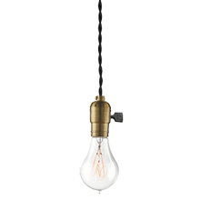

<!DOCTYPE html>
<html lang="en">
  <head>
    <meta charset="UTF-8" />
    <meta http-equiv="X-UA-Compatible" content="IE=edge" />
    <meta name="viewport" content="width=device-width, initial-scale=1.0" />
    <title>css animations</title>
    <style>
      body {
        margin: 0;
        padding: 0;
        box-sizing: border-box;
        display: flex;
        justify-content: center;
        align-items: center;
        height: 100vh;
      }

      .box {
        height: 200px;
        width: 200px;
        background-color: red;
        transition: 1s;
        animation: box;
        animation-duration: 5s;
        transform-origin: left;
        /* animation-delay: 3s;
        animation-iteration-count: 3;
        animation-direction: alternate;
        animation-timing-function: linear;*/
      }
      .box:hover {
        transition: 1s;
        transform: rotateY(-180deg);
      }
      /* @keyframes box {
        25% {
          transform: translateX(300px) rotate(360deg);
          background-color: rgb(66, 30, 210);
        }
        50% {
          transform: translateY(300px) rotate(-360deg);
          background-color: rgb(30, 210, 60);
        }
        75% {
          transform: translateX(-300px) rotate(360deg);
          background-color: rgb(21, 21, 21);
        }
        100% {
          transform: translateY(-300px) rotate(-360deg);
          background-color: brown;
        }
      } */
      /* .box:hover {
        height: 400px;
        width: 400px;
        border-radius: 50%;
        background-color: rgb(93, 0, 255);
        transition: 1s;
        border: 5px solid black;
        transform: translate(100px);
        transform: rotate(360deg);
        transform: scale(1.5);
        transform: skew(20deg);

      } */
      /*  img {
        height: 400px;
        transform-origin: top;
        transition: 1s;
        animation: bulb 2s linear alternate infinite;
        animation-duration: 2s;
        transition: 1s;
        animation-direction: alternate;
        animation-iteration-count: infinite;
        animation-timing-function: linear;
      }
      @keyframes bulb {
        0% {
          transform: rotate(50deg);
        }
        100% {
          transform: rotate(-50deg);
        }
      }*/
      .box-1 {
        height: 200px;
        width: 200px;
        background-color: red;

        position: relative;
      }
      .box-1::before {
        content: " ";
        height: 200px;
        width: 200px;
        position: absolute;

        right: 100%;
        background-color: rgb(10, 1, 1);
      }
      .box-1::after {
        content: " ";
        height: 200px;
        width: 200px;
        position: absolute;

        right: -100%;
        background-color: rgb(10, 1, 1);
      }

      .sync {
        transition: 1s;
        animation: sync 4s linear;
        animation-fill-mode: forwards;
        visibility: visible;
      }
      @keyframes sync {
        from {
          transform: rotateZ(1000deg);
        }
        to {
          visibility: hidden;
        }
      }
      .tick {
        stroke: green;
        animation: tick;
        animation-delay: 4s;
        transition: 1s;
        animation-fill-mode: forwards;
        visibility: hidden;
      }
      @keyframes tick {
        0% {
          visibility: hidden;
          transform: scale(0.5);
        }
        75% {
          visibility: visible;
          transform: scale(0.5);
          transition-delay: 1s;
        }
        100% {
          visibility: visible;
          transform: scale(1.2);
        }
      }
      /* ------FADEIN------ */
      .fade-cont {
        position: relative;
      }
      .fade-in {
        height: 136px;
        width: 188px;
        position: absolute;
        z-index: 1;
        opacity: 0.7;
        /* background: linear-gradient(to top, #e8e8e8 50%, #000 50%); */
        background: linear-gradient(to top, #000 50%);
        background-size: 100% 200%;
        background-position: top;
        transition: 1s;
        animation: fade 4s linear;
        animation-fill-mode: forwards;
      }
      @keyframes fade {
        99% {
          background-position: bottom;
          opacity: 0;
        }
        100% {
          opacity: 0;
        }
      }
      /* .fade-img {
        animation: fadeimg 7s linear;

        animation-fill-mode: forwards;
      } */
    </style>
  </head>
  <body>
    <div class="container">
      <!--  -->
      
      
      <svg
        class="tick"
        width="30px"
        height="30px"
        viewBox="0 0 245 173"
        version="1.1"
        xmlns="http://www.w3.org/2000/svg"
        xmlns:xlink="http://www.w3.org/1999/xlink"
      >
        <g
          id="Page-1"
          stroke="#e8e8e8"
          stroke-width="4"
          fill="none"
          fill-rule="evenodd"
          stroke-opacity="1"
        >
          <polyline
            id="tickmark"
            stroke="#000000"
            stroke-width="50"
            points="5.640625 83.7607422 83.2539062 161.663086 238.97168 6.11328125"
          ></polyline>
        </g></svg
      ><br /><br />

      <div class="fade-cont">
        <div class="fade-in"></div>
        
      </div>

      <!-- <div class="box-1"></div> -->
      <!--  -->
    </div>
  </body>
</html>
